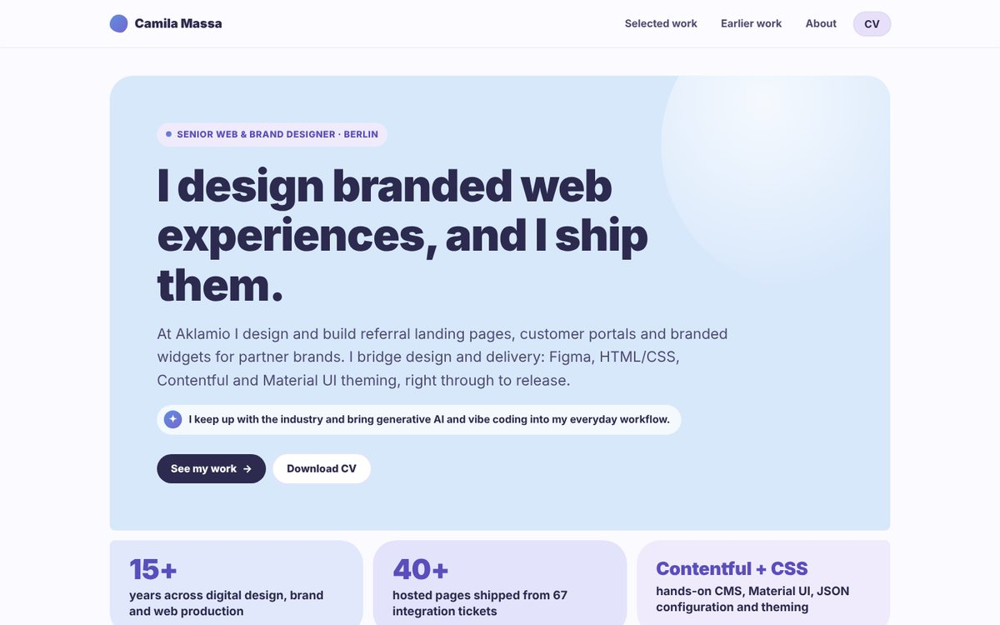

This portfolio: from a tidy grid to a desktop you can play with
You’re standing inside this case study. Here is how the site you’re clicking around grew from a calm pastel grid into a pastel Y2K desktop, with the concepts I threw away, the wireframes, how the style was settled, and a few things you might not have found yet.
- Role
- Everything: concept, art direction, UI design, copy and build
- For
- Hiring teams, and anyone who likes clicking things
- Tools
- Vibe coding with Claude, HTML, CSS, vanilla JS, GitHub Pages
- Output
- A static site with a desktop home, four pages and live case studies
- 13days, 26 Sep – 8 Oct 2026
- 114commits
- 5concepts kept as live sketches
- 7versions of one minesweeper icon
- 1shiba, who runs the place
It started out polite
The first version went live on 26 September. Soft blue to purple tiles, rounded everything, Nunito, a clear headline and two strong case studies. It matched my CV and it did its job.
It also looked like a lot of other portfolios. I design interfaces for a living, so the site itself should be the first proof of that, before anyone reads a word. I wanted something with personality, something people would remember and want to poke at.
The brief I gave myself: make the portfolio the first piece of work.

Concepts I tried on
I explored directions as quick, clickable sketches instead of static boards, because a portfolio is something you use, not just look at. Five of them are still live. Pick one.
Concept sketches
The bones of a desktop
Before any colour, the structure: a home page that behaves like a desktop, where every section is a window, and ordinary scrolling pages behind it. Scroll inside the sheet to see the home, mobile, About, Selected work and case study frames.
Finding the look
The desktop won because it turns a portfolio into a place: every section becomes a window, and the interface itself shows my UI skills. Then came the harder part, making nostalgia readable.
A pastel Windows 95
Old desktops were grey. I kept their grammar (bevels, title bars, taskbar) and swapped the colour for a sunset sky: blue, lilac, pink and butter yellow, with one dark indigo for every outline and every word.
- Sky
#adcfed - Lilac
#d7bce8 - Pink
#ef798a - Butter
#f4eea9 - Chrome
#f4f1fb - Indigo
#25283d
The page background is a five-stop sky, from morning blue to peach, with a grid floor fading in at the bottom.
Five pixel fonts later
The label font took the longest. A literal 8-bit face looked great in the sketches and was tiring to read, so I went looking for something that feels like software at a comfortable size.
- Press Start 2PConcepts. Charming, too tiny.
- RationaleBigger titles, still not right.
- Space GroteskClean, but lost the software feel.
- IBM Plex MonoSoftware, and readable at 16px.
- R95 Sans SerifA Win95 lookalike. Tried, then reverted.
- IBM Plex MonoBack again, for good.
Silkscreen stays on the taskbar only. Headings are Baloo 2, reading text is Quicksand.
Four house rules
- No border radius. Windows, buttons, chips and fields are all square. Chat bubbles are the only soft thing on the screen.
- Double borders, hard shadows. A 4px double indigo outline and a shadow with no blur, like windows stacked on a real desk.
- Everything is a file. Titles are lowercase filenames:
experience.log,hire-me.lnk,skills_and_tools.bmp. - Buttons press in. On hover the shadow disappears, so every button feels like a key going down.
Small decisions, on purpose
A desktop can turn into chaos quickly. Most of the design work was about keeping the play without losing the visitor.
Biggest window on top
Selected work is the largest window and sits in front. About and Early work peek out from behind it, so nothing is fully hidden and the most important thing is the first thing you see.
Click to open, double-click to go
A single click on a desktop icon opens its window, a double-click opens the full page, just like the real thing. The taskbar always has a way home.
A shiba instead of a popup
The first version greeted you with a confirm.exe dialog asking “Execute dazzling sequence?”. Fun once, a blocker every time after. Saori now says hello from the corner instead, and never gets in the way.
Phones stop pretending
Dragging windows on a phone is no fun. Below 640px the desktop becomes a stacked, scrolling page that keeps the windows’ look and drops the tricks.
Arranged by hand, per screen
Windows are placed in five breakpoint tiers, all hand-arranged. Some sections are closed in small screens, but loaded open on bigger ones!
Retro, not unreadable
Reading text stays at 16px or more in a soft sans, indigo on pastel. Decorative windows are hidden from screen readers, tooltips work on keyboard focus, and motion calms down for reduced-motion users.
Things you might have missed
Nothing on this site is decoration only. Spoilers below, so open them one at a time if you like hunting.
 saori.exeEvery page
saori.exeEvery page
Saori says hello when you land on the desktop, nudges you if the screen goes quiet, welcomes you back on a second visit and woofs if you click her. Each page has its own lines.
 TrashHome desktop
TrashHome desktop
Click the bin to open it and click the files: each one has a story, like border-radius-everything.css. Right-click the bin for “Empty Trash” and watch everything come back (Saori: “Nice try.”). The best file in there, zumzumzum.mp4, plays a short video of her.
 minesweeper.exeHome desktop
minesweeper.exeHome desktop
A real, simplified game on one fixed 8 by 8 map, so the smiley button replays the same board. Right-click to flag. Clear every safe square and confetti falls.
 skills_and_tools.bmpAbout
skills_and_tools.bmpAbout
The Paint window actually paints: brush, eraser, eyedropper, shapes and more. Click a colour in the palette and the skill pills repaint themselves.
 experience.logAbout
experience.logAbout
My experience is a chat window, and the message box at the bottom works. Send one message and you get a reply.
 network.exeHome desktop
network.exeHome desktop
The network icon opens a dialog with my email. The address is never written in the page source: it is stored backwards and put together when you ask for it.
 notice.exeHome desktop
notice.exeHome desktop
The stack of warnings in the corner can be closed. It just comes back a little later, like every good nag window.
 trayTaskbar
trayTaskbar
Hover the little icon next to the wifi in the taskbar. The clock is real too.
Designed in the browser, going with the vibe
There was no handoff, because I was on both sides of it. After coming up with the visual concept and the initial structure on Figma, I designed straight in code, vibe coding with generative AI, and judged every little change in the browser.
Sketches you can click
Concepts were working pages from day one, so I could feel the navigation, not just look at it. Weak ideas showed themselves fast.
Small steps, 114 times
Every change was its own commit: a font swap, a new icon, a pixel nudge for a 12-inch screen. Easy to try, easy to undo, and the history became this case study.
The style became a skill
I wrote the whole system down as a Claude skill: colours, type, window chrome, buttons and responsive rules. New pages come out on brand from the first draft.